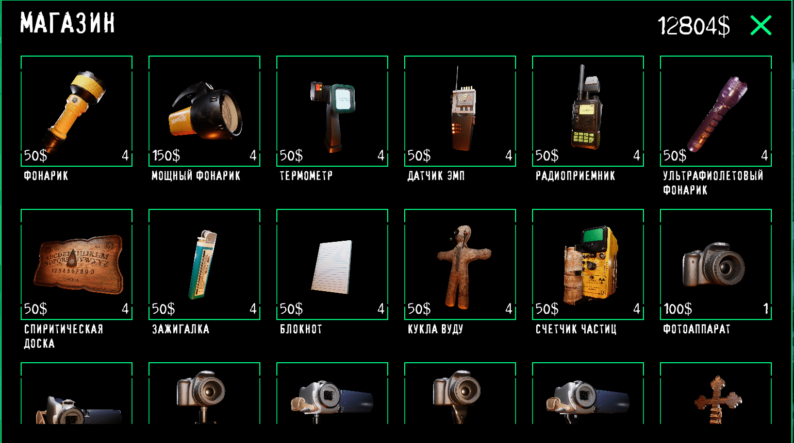
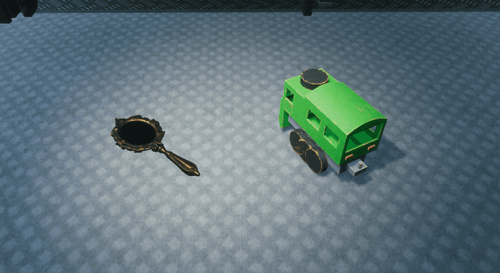
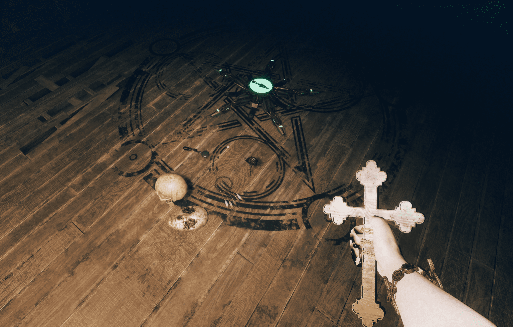

1 тип:
Есть предметы для удобства игрока и побочных заданий (например фонарик и фотоаппарат). Так же помимо бесплатных предметов в фургоне мы можем докупать нужные предметы в магазине и приобретать только доступные там предметы.
Рассмотрим предметы, доступные в игре:
Датчик движения Поглотитель плазмы Детектор опасности Испепеляющий свет Колба с пеплом Везувия Магическая книга Таблетки для здравомыслия Светая соль Огненная соль Соль Шприц адреналина Видеокамера с датчиком движения Фотоаппарат с датчиком движения Видеокамера со штативом Фотоаппарат со штативом Фонарик Мощный фонарик Зажигалка Фотоаппарат Видеокамера Святая вода Золотая бомба Серебряная бомба Статуя христа Благовония Распятие Святой огонь Ритуальный кинжал Ловушка для призрака Осветительная система Магический порошок Радиоприемник Блокнот Детектор эктоплазмы Сборщик эктоплазмы Проявитель эктоплазмы Кукла Вуду Счетчик частиц Термометр Спиритическая доска Датчик ЭМП Ультрофиолетовый фонарик2 тип:
В игре есть 2 типа обычных проклятых предметов и предметы для модификатора. Любой из них можно найти как обычном способом (просто найти на карте), так и при помощи камеры. Второй вариант проще, тк предметы светятся зеленым в камере и их лучше видно.
Первый тип предметов - это проклятая игрушка. Она имеет яркие цвета и бывает 4 видов: свинка, мишка, паровозик и детские счеты. Игрушка нужна для выполнения некоторых побочных заданий и изгнания некоторых призраков (например ребенка).
Второй тип - это проклятое зеркало. Оно так же нужно для заданий и изгнания, однако оно так же может помочь найти призрака или вызвать его. Если посмотреть в зеркало в доме, то вы увидите то же что и призрак, и он пойдет в вашу строну. Если долго смотреть в зеркало то призрак появится и нападет на вас.
Третий тип был добавлен с модификатором "Пентаграмма". Эти предметы нужны для ритуала пентаграммы и их можно можно найти на локации, если включен модификатор. От предметов будет исходить зеленое свечение как от зеркала и игрушки. К данному типу относится: Ловец снов, ритуальная маска, ритуальная роза, череп умершего человека и остановившиеся часы.
